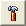
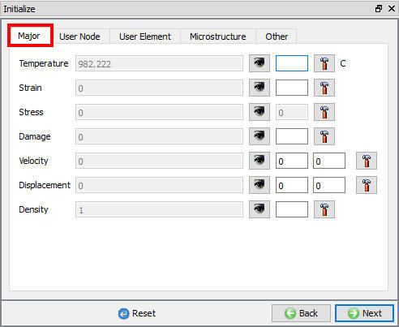
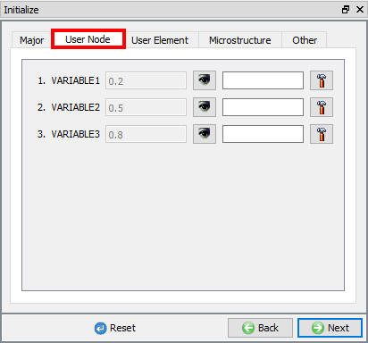
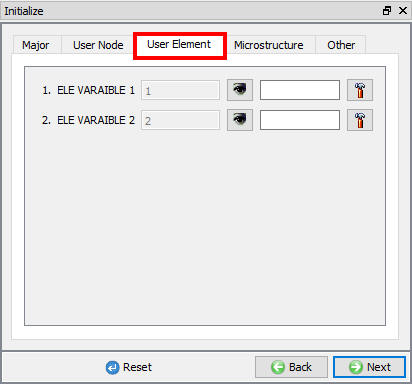
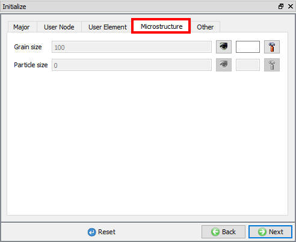
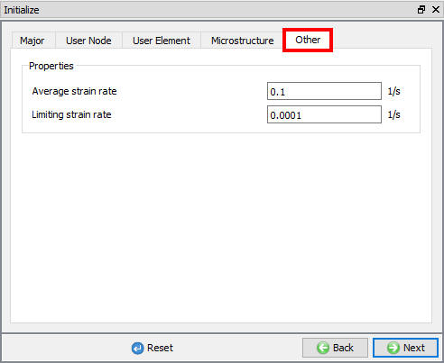

17.1. Major State Variables Tab
17.2. Use Node State Variables Tab
17.3. Use Element State Variables Tab
17.4. Microstructure State Variables Tab
17.5. Other State variables Tab
User can initialize the object data using initialize page, nodal data window, elemental data window or interpolate data of an object from a DB using data interpolation. In Initialize window, few state variables that are commonly used such as temperature, strain, stress, damage, velocity, displacement, density, user node variable, user element variable and microstructure grain size and particle size are made available for initialization. User can also initialize the Average strain rate and Limiting strain rate value under "Other" tab. in "Initialize" page
User can initialize the values for these state variables by defining in the field next to it and clicking on

button. The value is initialized for entire object. Fig. 17.1. shows the various state variables that are available in Initialize window. For state variable like velocity and displacement, provided input fields as many as dimensions, user needs to define the directional values of the variables in respective fields and then clicking on button will calculate the total velocity and displacement.If the state variables are not available in the object initialize page or if user would like to use picking options to selectively apply state variable to a part of an object then user can user Node and Element data windows, for more information on how to initialize state variables in Node and Element windows please refer Object node Data and Object element Data.
Under Major tab user can initialize Temperature, Strain, Stress, Damage, Displacement and Density state variable.(See Fig. 17.1.)

2D Object Initialize Major window
Under User node tab, user defined Node variables will be shown under user Node field. User can initialize the user defined node variables values. (See Fig. 17.2.)

Object initialize User node window
Under User Element tab, user defined element variables will be shown under user Element field. User can initialize the user defined element variables values. (See Fig. 17.3.)

Object initialize User node window
Under Microstructure tab, user can initialize the Grain size and particle size variable values. (See Fig. 17.4.)

Object initialize Microstructure window
Under Other tab, user can initialize the Average strain rate and Limiting strain rate value.(see Fig. 17.5.)

Object initialize Other window
Related Topics:
17.3. Data interpolation Window